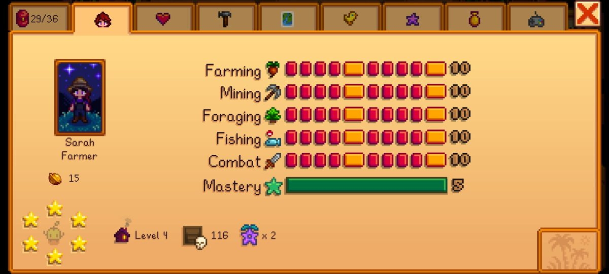
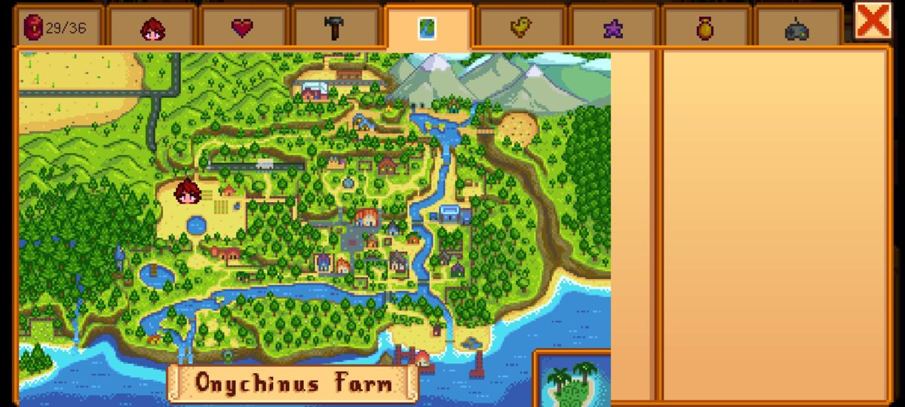
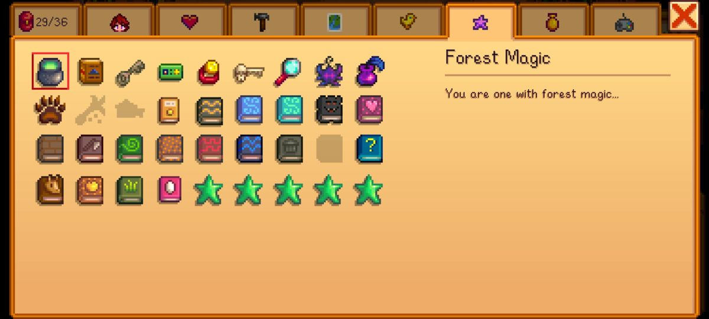

Quem é a Sarah
Fazendeira de chapéu de palha e macacão roxo. Já maximizou todas as habilidades do vale e agora vive cuidando dos bichos, da família e do dinheiro (muito dinheiro).
- 10 Agricultura
- 10 Mineração
- 10 Coleta
- 10 Pesca
- 10 Combate
- 5 Maestria
💰 2.211.817g no bolso · 5.792.084g ganhos no total

Onde eu moro

A Onychinus Farm fica a oeste de Pelican Town, colada na floresta Cindersap e no rancho da Marnie.
A casa já está no nível 4, com espaço para o marido, os dois filhos e a gata.
Minha família
Sebastian
Marido · 14 ❤
Sasuke
Filho · 5 ❤
MeiMei
Filha · 1 ❤
kitty
Gata · 5 ❤
Amizades
Os corações que eu tenho com cada morador do vale (o máximo é 10).
Adivinhe os corações
Escolha um morador e chute quantos corações eu tenho com ele.
Meus animais
Conquistas
- ⭐ Todas as 5 habilidades no nível 10
- ⭐ 5 maestrias liberadas
- ⭐ Centro Comunitário restaurado
- ⭐ Casada com o Sebastian, com dois filhos
- ⭐ Magia da Floresta
- ⭐ Mais de 20 livros de poder lidos
- ⭐ 15 nozes douradas encontradas
- ⭐ Mais de 5 milhões de ouro ganhos
